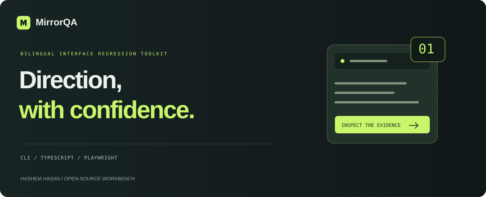
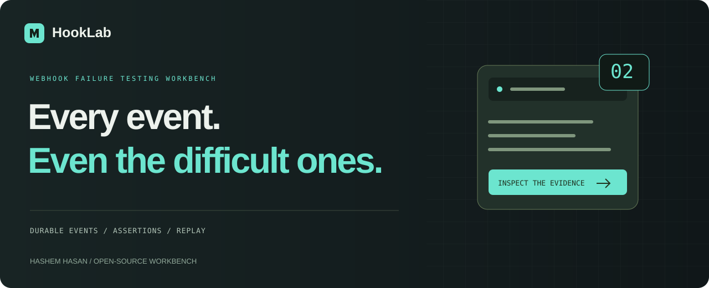
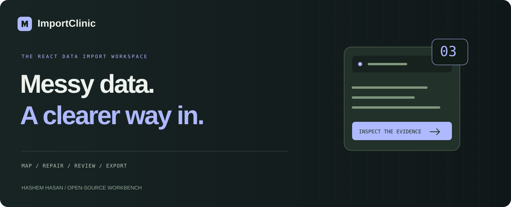
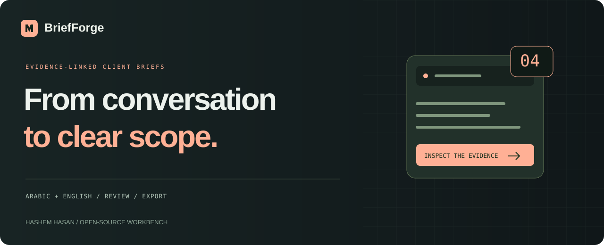

BASED IN JORDAN · OPEN TO REMOTE WORK
Interfaces.
Systems.
Useful things.
I’m Hashem, a full-stack developer with a design mindset. I turn real requirements
into thoughtful interfaces and connected web products.
Explore Tarneeb Tech ↗
Explore selected work ↓
REACT / NEXT.JS / NODE.JS / MONGODB
Arabic & English · Development & visual craft
PORTFOLIO / VOL. 02
01 / SELECTED BUILDS
Small details.
Working products.
12 projects shown.

OPEN-SOURCE / WORKING DEMO + ENGINEERING NOTES
DEVELOPER TOOL / BILINGUAL UI REGRESSION CHECKS
MirrorQA
Playwright CLI, annotated evidence, visual baselines and a report explorer.
↗
TypeScriptPlaywrightTesting

OPEN-SOURCE / WORKING DEMO + ENGINEERING NOTES
DEVELOPER TOOL / WEBHOOK FAILURE WORKBENCH
HookLab
Signed HTTP delivery, a durable SQLite queue and repeatable recovery assertions.
Public demo: browser simulation.
↗
Node.jsSQLiteReliability

OPEN-SOURCE / WORKING DEMO + ENGINEERING NOTES
DEVELOPER TOOL / REUSABLE REACT IMPORT WIZARD
ImportClinic
Map columns, repair row errors and review locale-aware data before an explicit
handoff.
↗
ReactTypeScriptData validation

OPEN-SOURCE / WORKING DEMO + ENGINEERING NOTES
DEVELOPER TOOL / EVIDENCE-LINKED SCOPE DRAFTS
BriefForge
Trace requirements to their source, preserve unknowns and review edits. Public
demo: local rule-based mode; optional AI adapter in source.
↗
ReactProvenanceAI adapter
● ● ●rowcraft / workspace
ROWS08
COLUMNS05
READY100%
PROJECTTEAMBUDGET ↓Customer portalEngineering9,200API integrationEngineering6,800Website redesignDesign4,200
SAMPLE DATA / IN-BROWSER WORKSPACE
01 / DATA TOOL
Rowcraft
Messy export to useful dataset. A local-first CSV and JSON workbench with
sorting, search, deduplication and export.
↗
Next.jsData processingLocal-first
LINKLANE / LINK WORKSPACE
example.com/a-very-long-destination
↓
/s/your-next-idea ↗
CUSTOM ALIASES · EXPIRY · REDIRECT COUNTS
SELF-HOSTED / NO THIRD-PARTY SHORTENER
02 / FULL-STACK TOOL
Linklane
A shorter way there. A persistent link workspace with custom aliases, expiring
redirects and a browser-owned library.
↗
Node.jsSQLiteAPI design
SKYSCAN / THE DAILY OUTLOOK
A little more outlook.
MON
24°TUE
23°WED
25°THU
22°FRI
21°
ILLUSTRATIVE FORECAST / CITY SEARCH & SAVED PLACES
03 / WEATHER PRODUCT
SkyScan
The day ahead, a little clearer. Search cities, explore hourly and seven-day
forecasts, and keep your favorite places close.
↗
Open-MeteoAPI integrationResponsive UI
MINTLINE / FINANCIAL DESIGN CONCEPT
Make space
for what matters.
mintline.YOUR FUTURE, IN FOCUS
INTERACTIVE SAVINGS PLANNER / NO REAL ACCOUNTS
04 / PRODUCT DESIGN & FRONTEND
Mintline
A considered financial concept with a working savings planner. Explore budgets,
goal timelines and exportable plans.
↗
ReactProduct designCalculation tests
BPM01
CLIENT PLATFORM / TARNEEB TECH
BPM Arabia
Business-process documentation, workflow mapping and archiving in one platform.
↗
WorkflowBusiness systemsPrivate source
JANZEER02
CLIENT WEBSITE / TARNEEB TECH
Janzeer Professional
A haircare and personal-care ecommerce experience built around the product.
↗
EcommerceProduct experiencePrivate source
YAWKEYS03
WEB PLATFORM / TARNEEB TECH
Yawkeys
Video-game price comparison and deal discovery, designed for a better search.
↗
ComparisonDiscoveryPrivate source
CIPHERLENS04
WEB INTERFACE / TARNEEB TECH
CipherLens
An interface for password-sample analysis, classification and metrics.
↗
Data interfaceAnalysisPrivate source
No matching projects. Try another search or filter.
02 / HOW I BUILD
From the interface
to the database.
My background connects web development and multimedia design. I care about the surface
people interact with, and the systems that make it work.
I’m also pursuing a degree in Data Science and Artificial Intelligence at Al Al-Bayt
University.
01
Clear interfaces.
React, Next.js, responsive layouts, state management and an eye for visual
hierarchy.
02
Connected systems.
Node.js, Express, REST APIs, MongoDB and frontend-to-backend integration.
03
Work that holds together.
Practical debugging, meaningful tests, readable documentation and considered
details.
THE EARLY CHAPTERS
Every builder starts somewhere. My original HTML and CSS exercises remain available.